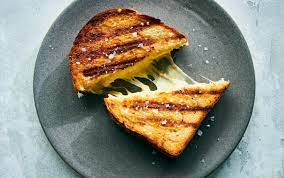

Cheese Sandwich

Description
A cheese sandwich is a sandwich made with cheese on bread. Typically semi-hard cheeses are used for the filling, such as Cheddar, Red Leicester, or Double Gloucester. A Guardian article called the cheese sandwich a "British lunchtime staple".
Ingredients
- Vegetables
- Fried Eggs
- Cooked Meat
- Mayonnaise
Steps
- Heat a heavy pan over medium-low heat.
- Thinly spread one side of each bread slice with butter. Spread the other side of each slice with mayonnaise and place the bread, mayonnaise-side-down, in the pan. Divide the cheese evenly on top of the buttered slices. Adjust the heat so the bread sizzles gently.
- When the cheese is about halfway melted, use a spatula to flip one slice over on top of the other, and press lightly to melt. Keep turning the sandwich, pressing gently, until the sandwich is compact, both sides are crusty, and the cheese is melted.
COOKING
Go back to home page